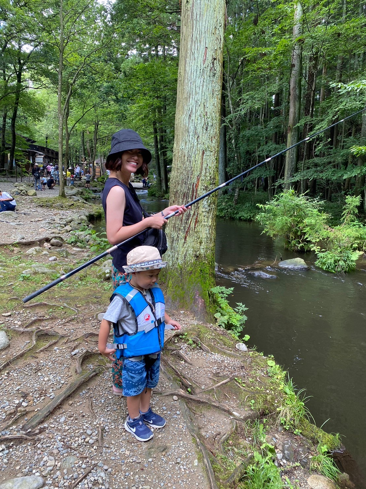

WORKS


SKILLS
ABOUT

高校卒業後、アパレルや飲食業界でアルバイト、ワーキングホリデーを利用し渡豪、営業事務、設計補助として従事。様々な業界・業種そして人種と携わる事で視野が広がりました。 アパレルや飲食業界では主に、業務効率化やホスピタリティやコミュニケーション力を、様々な開発現場では、開発フロー、進捗管理力、リスク管理力を養えたと思っております。また、先を読む事や他部門同士の方々と連携を取りながら仕事を行う事を得意としております。
開発業務に携わる中で、プログラミングやWEBデザインへの興味が強くなり、オンラインスクールを受講。HTML/CSS、Javascript、Illustrator、Photoshopを勉強する事でWEBデザインスキルを取得。 ユーザーにクライアントの想いと商品が伝わるデザイン。そして、見やすくて使い心地の良いWEBサイトの制作を行い、デザイン性と機能性を両立させる事で貢献いたします。
趣味は美容、グルメ巡りと旅行がですが、キャンプや釣りなどのアウトドアも好きです。
どうぞ、宜しくお願いいたします。
CONTACT
aikxxoxo3@gmail.com